Home
Production
DB_Mk_III
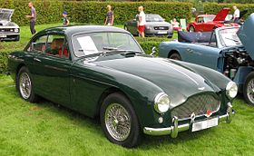
- Year: (1957–1959)
- Units Produced: 551
- Designed by: Tadek Marek
DB4_2
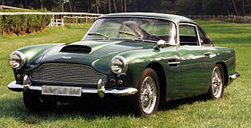
- Year: (1958–1963)
- Units Produced: 1,204
- Designed by: Carrozzeria Touring
DB5

- Year: (1963–1965)
- Units Produced: 1059
- Designed by: Carrozzeria Touring
DB6_r
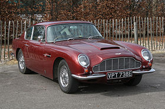
- Year: (1965–1970)
- Units Produced: 1788
- Designed by: Tadek Marek
DB-S
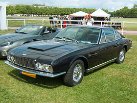
- Year: (1967–1972)
- Units Produced: 787
- Designed by: William Towns
DB7
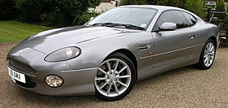
- Year: (September 1994–December 2004)
- Units Produced: 7000
- Designed by: Ian Callum & Keith Helfet
DB8
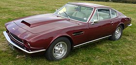
- Year: (1969–1989)
- Units Produced: 4021
- Designed by: Anonymous
DB9
- Year: (2004–2016)
- Units Produced: ??
- Designed by: Ian Callum & Henrik Fisker
DBX
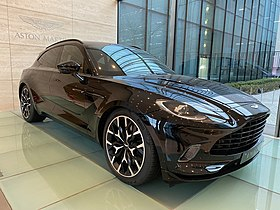
- Year: (2020-Present)
- Units Produced: Counting
- Designed by: Marek Reichman
DB11
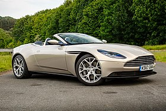
- Year: (2016–present)
- Units Produced: Counting
- Designed by: Marek Reichman
Vulcan
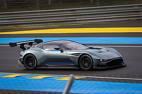
- Year: (2015–2016)
- Units Produced: 24
- Designed by: Marek Reichman
Vantage_V8
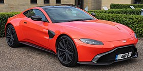
- Year: (2018–present)
- Units Produced: Counting
- Designed by: Marek Reichman
Aston_Martin_One-77
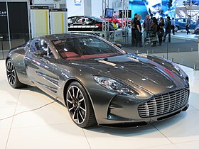
- Year: (2009–2012)
- Units Produced: 77
- Designed by: Marek Reichman
Valkyrie
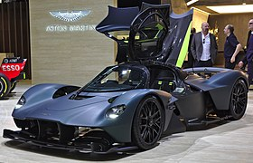
- Year: (November 2021 – present)
- Units Produced: Counting
- Designed by: Adrian Newey
DB_MK_III